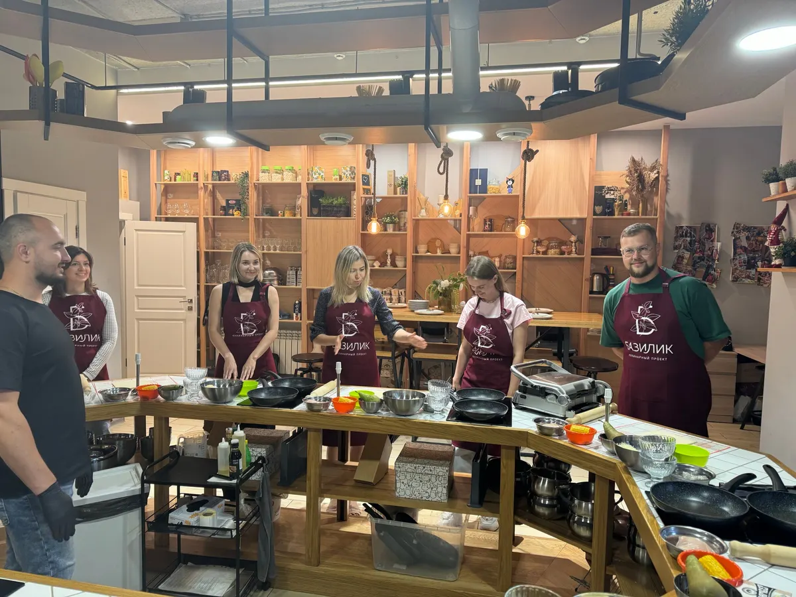
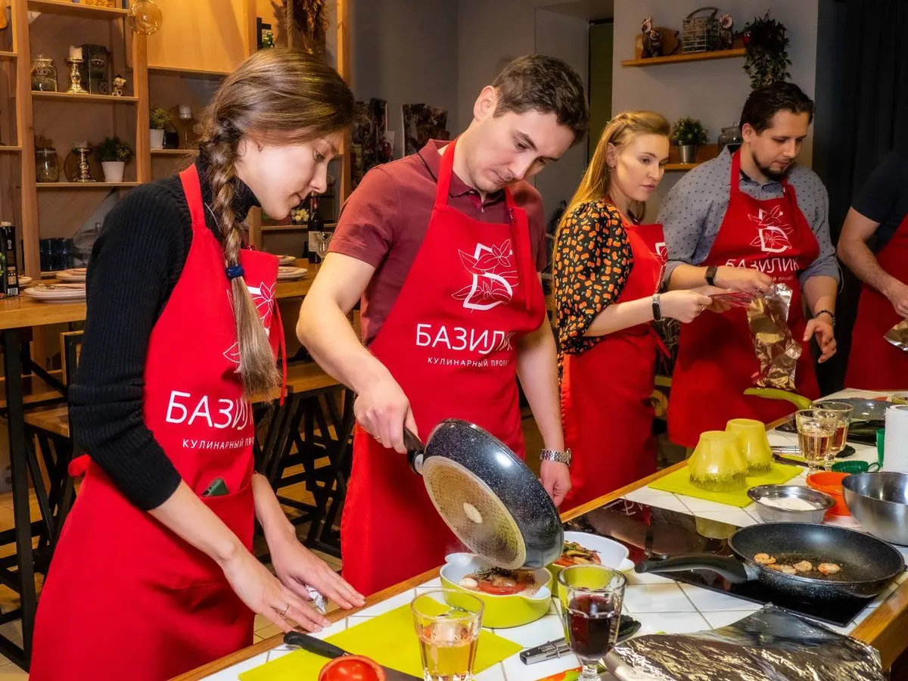
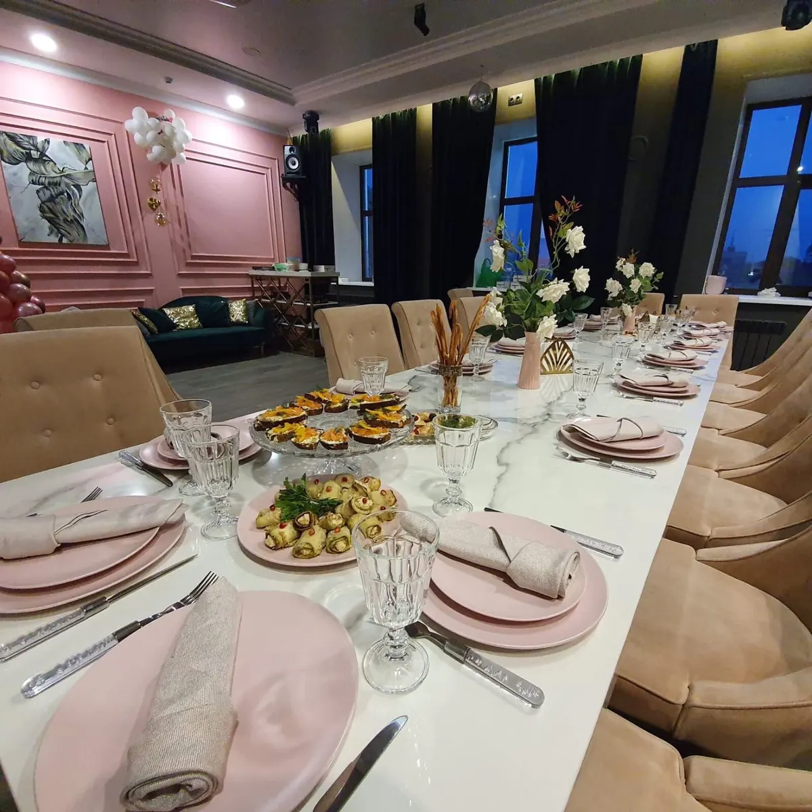
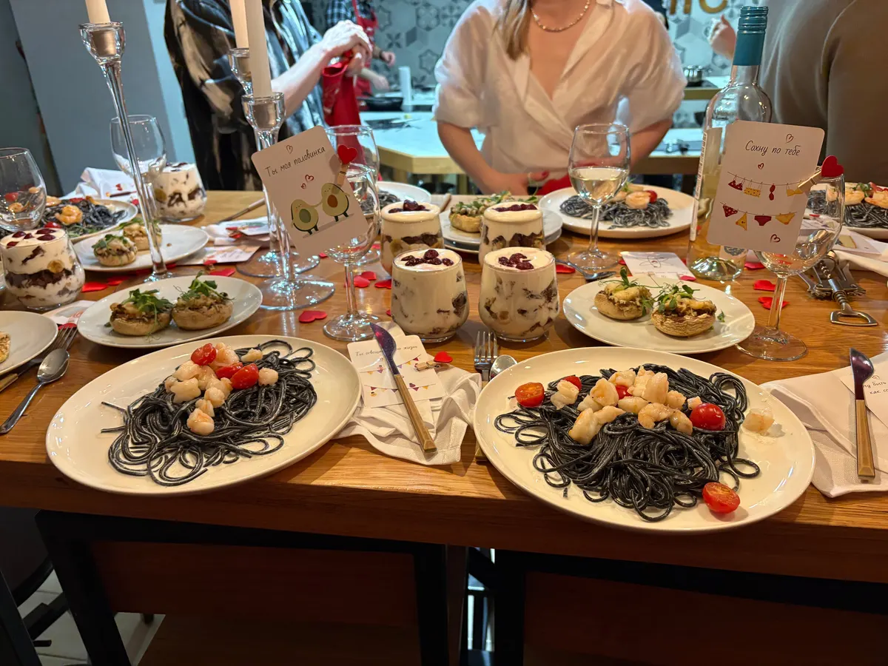

Кулинарная студия на набережной · Йошкар-Ола
Кулинарный корпоратив в Йошкар-Оле: команда готовит, команда ест
Под руководством шефа вся компания готовит горячее, салат и десерт, а потом садится за общий стол. Скучную подготовку мы берём на себя.
- Зал мастер-классов до 16 человек, банкетный зал до 32
- Три блюда за час: горячее, салат и десерт
- Свои напитки можно принести, пробкового сбора нет

Что получает ваш корпоратив в студии «Базилик»
Что входит в корпоратив
- Зал мастер-классов до 16 человек: станции для готовки и обеденный стол
- Мастер-класс шефа: горячее, салат и десерт
- Заготовки подготовлены, чистить картошку не придётся
- Свои напитки можно принести, пробкового сбора нет
Можно добавить
- Банкет в камерном зале до 32 человек
- Праздничный декор и красивая сервировка
- Фотосессия в студии и на набережной
- Дегустация
Что можно заказать в кулинарной студии в Йошкар-Оле
Стоимость зависит от формата, даты и числа гостей. Цену на ваш корпоратив называем при записи.
Для команды
- Кулинарный мастер-класс для коллективаготовите вместе с шефом, потом едите за общим столомуточнить
- Корпоративный тимбилдингкомандный вечер вокруг кухни и столауточнить
- Новогодний корпоратив в студиипраздничный декор, сервировка и мастер-классуточнить
Залы
- Зал мастер-классовдо 16 человек, кухонные станции и обеденный столуточнить
- Банкет в камерном заледо 32 человек, зал в классическом стилеуточнить
Другие праздники
- День рождения или юбилеймастер-класс, банкет или то и другоеуточнить
- Девичник или мальчишникготовите вместе компаниейуточнить
- Дегустацияформат обсуждаем при записиуточнить
- Фотосессия в студиизалы и набережная рядомуточнить
- Детский праздниккулинарная программа для детейуточнить
Нужного нет в списке? Позвоните или напишите: +7 (902) 435-05-25.
Как заказать кулинарный корпоратив в Йошкар-Оле
- 01
Напишите дату и число гостей
В WhatsApp, Telegram или по телефону +7 (902) 435-05-25. Назовите, сколько вас будет и какой формат интересен.
- 02
Выберите формат
Мастер-класс, общий ужин, банкет в камерном зале или всё вместе. Администратор подскажет, что подойдёт вашей компании.
- 03
Приходите на набережную
Эшкинина, 10Д. Напитки можно принести с собой, пробкового сбора нет.
- 04
Готовьте и садитесь за стол
Шеф рассказывает и показывает, вы готовите блюда и сами их едите. Остаётся время сфотографироваться всей компанией.
Фото кулинарной студии, камерного зала и общего стола студии «Базилик» в Йошкар-Оле



Чем студия запоминается
Скучную работу делаем мы
Заготовки подготовлены заранее: никакой чистки картошки и долгих приготовлений, вам достаётся самое интересное.
Шеф подсказывает на каждом шаге
Организаторы рассказывают, показывают и подсказывают, что и как нужно сделать. Гости уходят с новыми приёмами.
Свои напитки можно принести
Пробкового сбора нет: любимые напитки к ужину берёте с собой.
Два зала под одной крышей
Зал мастер-классов для 16 человек и камерный зал в классическом стиле для банкета до 32 человек. Выход на набережную рядом.
Отзывы о студии «Базилик» в Йошкар-Оле
«Локация на Набережной, красивый интерьер, приветливый персонал. Провели для нас мастер-класс на корпоративе, получилось вкусно и интересно»
Светлана Куклина · 25 ноября 2025
«Классное место, проводили тимбилдинг. Приготовили все быстро и вкусно и успели насладится после приготовленными блюдами. Для себя запомнила несколько классных фишек в приготовлении от повара, буду применять на практике»
Анастасия · 16 октября 2024
«Очень милое место, еда получилась вкусная. Хорошее место для проведения тимбилдингов. Рекомендую. Красивый выход из здания с видом на озеро.»
Анна · 30 августа 2023
Отзывы с карточки на Яндекс.Картах, без правок.
Частые вопросы о корпоративе в кулинарной студии в Йошкар-Оле
Сколько стоит корпоратив в студии?
Стоимость зависит от формата, даты и числа гостей. Назовите дату и сколько вас будет, администратор посчитает в WhatsApp, Telegram или по телефону +7 (902) 435-05-25.
Сколько человек вмещает студия?
В зале мастер-классов помещаются до 16 человек. Камерный зал в классическом стиле для банкетов вмещает до 32 человек.
Что мы будем готовить?
В формате праздничного вечера вы за час готовите три блюда: горячее, салат и десерт, а потом садитесь за общий стол. Меню на ваш корпоратив согласуем при записи.
Нужно ли уметь готовить?
Нет. Шеф рассказывает, показывает и подсказывает на каждом шаге, а заготовки уже подготовлены: чистить и нарезать горы продуктов не придётся.
Можно ли принести свои напитки?
Да, любимые напитки можно приносить с собой. Пробкового сбора у нас нет.
Проводите ли вы другие праздники?
Да: дни рождения и юбилеи, девичники и мальчишники, дегустации, фотосессии, детские и взрослые праздники, банкеты и свадьбы в камерном зале.
Как вас найти и когда вы работаете?
Йошкар-Ола, ул. Эшкинина, 10Д, на набережной. Остановка «Микрорайон Сомбатхей» в 119 метрах. Работаем по записи: дату и время согласуем по телефону или в мессенджере.
Назовите дату и число гостей
- Адрес
- ул. Эшкинина, 10Д, Йошкар-Ола
- Часы
- По записи, время согласуем
- Телефон
- +7 (902) 435-05-25